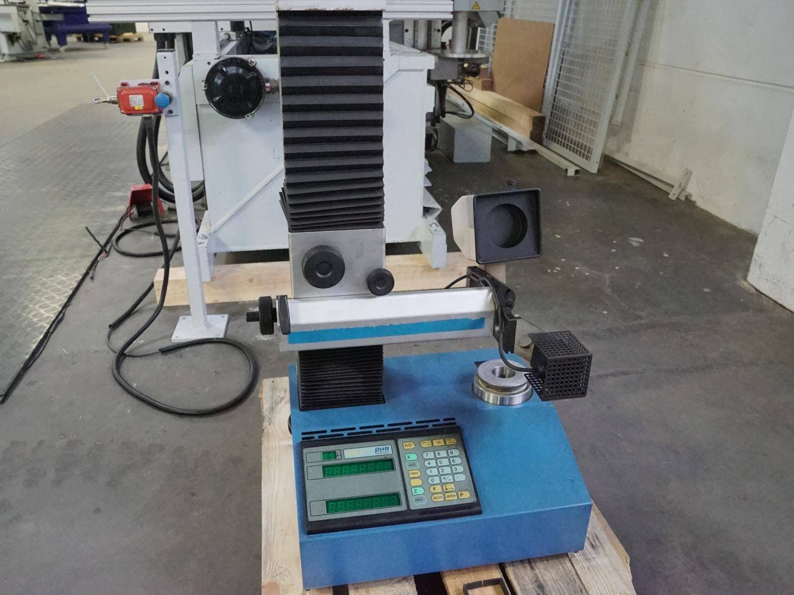

Во время изготовления любой продукции изготовитель должен производить промежуточный контроль качества. Помимо обычного измерительного инструмента, такого как штангенциркуль, штангенрейсмус, глибиномер, проходные и резьбовые пробки, на предприятии для этого используется современное оборудование:
Система измерений Renishaw – используется для измерения длины, диаметра инструмента, а также для ряда других задач. При помощи этой системы с высокой точностью производится контроль множества размеров, например диаметр отверстия/бобышки, длина/ширина паза, профиля. Есть возможность измерить угол, высоту. Промежуточное измерение при помощи Renishaw можно включить в управляющую программу станка с ЧПУ, что очень удобно при работе с коррекцией инструмента.

Система измерений Toolmaster – предназначена для предварительного измерения инструмента с высокой точностью, что позволяет вводить коррекцию размеров ещё на этапе подготовки изготовления продукции.